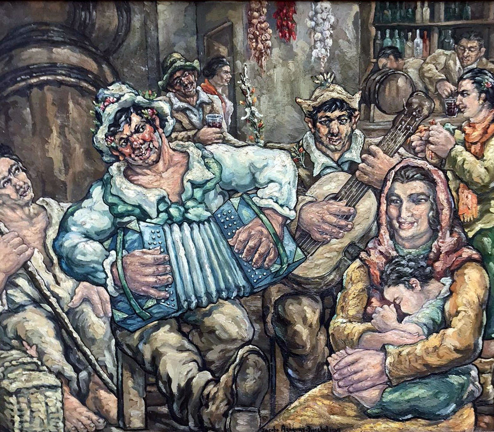
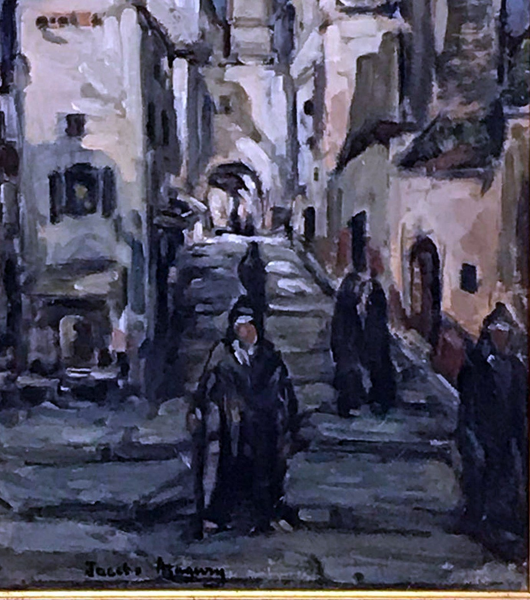
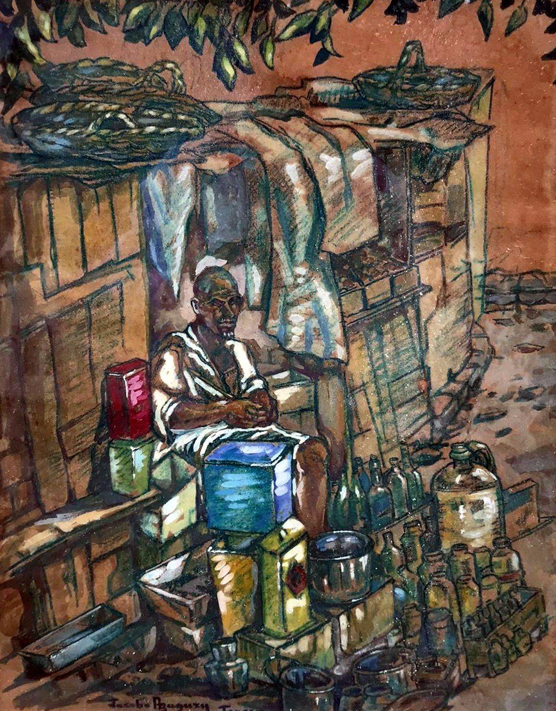

Works
The seven works shown are from a private family collection. Provenance: private family collection; further provenance research and documents to be confirmed. Titles are descriptive working titles until confirmed.







Jacobo Azagury OBE is among the most important painters Gibraltar has produced. An expressionist with deep sympathy for ordinary people, he painted the harbours, markets and characters of Gibraltar, Tangier and Madeira across a long life that spanned two World Wars.
RSAS view. Azagury painted Gibraltar and Tangier as he found them, with compassion rather than flattery. His harbours, markets and characters are a rare first-hand record of the Strait in the twentieth century.
- Born
- Gibraltar, 12 June 1886
- Died
- 17 January 1980
- Training
- Real Academia de Bellas Artes de San Fernando, Madrid (1915), and in Lisbon under José Veloso Salgado
- Honours
- OBE, 1979 New Year Honours (London Gazette, 30 December 1978); Gibraltar Medallion of Honour, awarded posthumously in 2008 for services to art
- Based
- Gibraltar
- Nationality
- Gibraltarian
- Career stage
- Modern master (Gibraltar)
- Market
- Secondary
- Representation
- Not applicable
Biography
Life
Azagury spent most of his life in Gibraltar. He trained at the Real Academia de San Fernando in Madrid in 1915 and continued his studies in Lisbon, yet he liked to say that his true teacher was nature and his love for mankind.
After the Second World War he was a founding member of the Calpe Artists Society and encouraged younger painters. He first exhibited in Gibraltar in 1952 at the Calpe Institute and showed regularly afterwards, notably in 1965 at the newly opened John Mackintosh Hall. In his last decade a tumour affected the sight of one eye and made painting difficult. He was appointed OBE in the 1979 New Year Honours, announced on 30 December 1978, and died on 17 January 1980.
Gibraltar and Tangier
His father belonged to the Azagury family of Tangier and his mother was from Gibraltar, and the two cities shaped his work. Tangier's markets, minarets and street vendors recur throughout his output, alongside the houses, bars and harbour of Gibraltar. He exhibited in Tangier as well as in La Línea, Jerez de la Frontera, Málaga and Granada.
The Madeira years
During the wartime evacuation of Gibraltarians he lived in Madeira, where he painted and exhibited in Funchal. The strain of war is visible in the bleak palette of Los Olvidados (The Forgotten Ones), a large canvas of hunched, isolated figures painted during the evacuation.
The Tavern Musicians presented here is signed "Jacobo Azagury Funchal", linking it to his time in Funchal; the date after the signature is not legible.
La Caleta
That sombre mood is balanced by the joyously coloured views of the fishing village of La Caleta (Catalan Bay) that he painted in the late 1950s and 1960s, among them a 1958 picture with the then parish priest B. P. Devlin and a 1962 view from the hotel.
Character studies
Azagury was a keen sketcher of local figures: Simon Oliva; Juan "el betunero", the shoe-polisher at the Petit Bar on Main Street, now the Horseshoe Pub; and Tobaiba, Gibraltar's well-known tramp. His only known finished portraits of women are of his mother.
The large Street Portrait in a Green Jacket presented here, signed at the top right, belongs to this side of his work: an unidealised study of an ordinary man, painted with the same sympathy.
Works linked to Gibraltar's Jewish community include a 1955 portrait of the then student Rabbi Dr Abraham Levy OBE and an architectural drawing of the Nefusot Yehudah Synagogue.